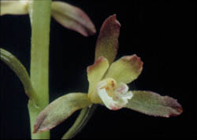
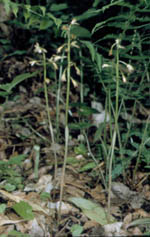
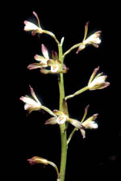

SE 3316 Lab 1
Hello World!
List of Plants
-
Aplectrum
- Location:
- Specific Habitat:Deciduous Forest Region. Rare in both provinces. At the northernmost edge of its distribution area in southern Ontario and Quebec. Prefers rich deciduous forests, especially beech and sugar maple. Prefers deep pockets of humus on the edge of a hole created by uprooting of an old tree. Often grows in flat, moist areas not far above the level of temporary ponds.
- Flowering Season:June
- Description:Height to 20 cm. One basal, elliptic leaf stalk, dark green with white veins. Leaf turns dark brown in the spring. Loose raceme of 5-10 flowers. Flowers purplish tipped with brown, 3-lobed lip, central lobe wide, white, marked with purple.
- Comments:Easiest to spot in leaf in the autumn or early spring when the solitary green leaves are more conspicuous in contrast to the dead leaves on the forest floor. The green overwintering leaf takes advantage of the higher light levels available before the trees leaf out to generate food stores for energy for flowering and fruiting. Only produces a few flower spikes per colony in any season, but produces a new corm each year. Both English names refer to the corms. Their sticky consistency was used for mending broken crockery by early settlers.
- References:Orchids of Ontario The Canadian Field-Naturalist Vol III - 1
- Read more on Wikipedia
-
Images:
-

Flower
-

Habitat
-

Plant